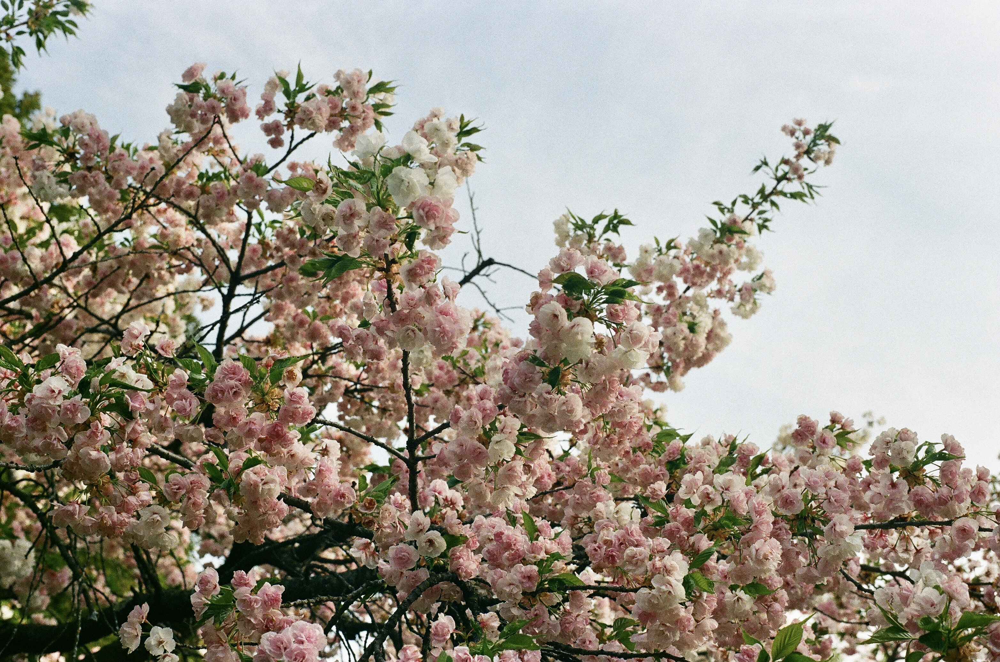

Kanzan Cherry

Cherry blossoms are one of the more iconic Springtime flowers in New York. Kanzan trees, also known as Japanese flowering cherry trees, have fluffy pink and white flowers.
Here are some fun facts about Kanzan cherry trees:
- Kanzan cherry trees actually don't produce any fruit.
- There are 38,978 recorded Kanzan cherry trees in NYC.
- The Kanzan cherry tree is native to China, Japan, and Korea.
Sources:
Arbor Day Foundation. “Kanzan Cherry.” Accessed October 26, 2025. https://shop.arborday.org/kanzan-cherry.
NYC Parks. “Japanese Flowering Cherry Trees in NYC.” Accessed October 26, 2025. https://tree-map.nycgovparks.org/tree-map/species/92631.